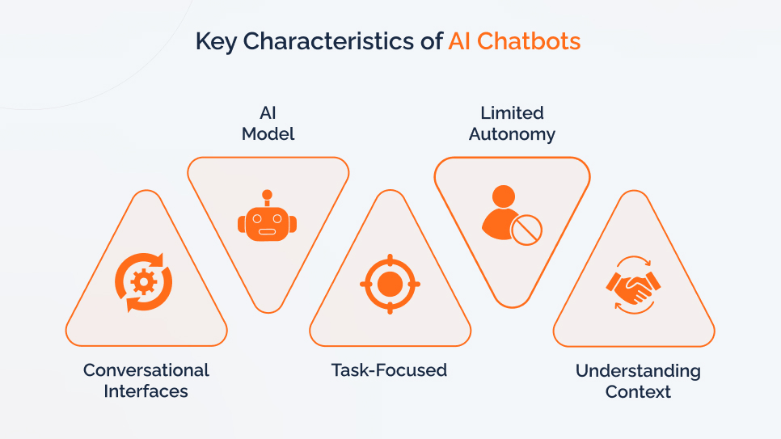
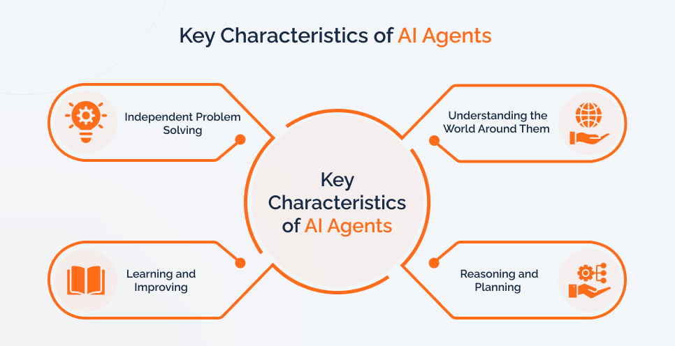
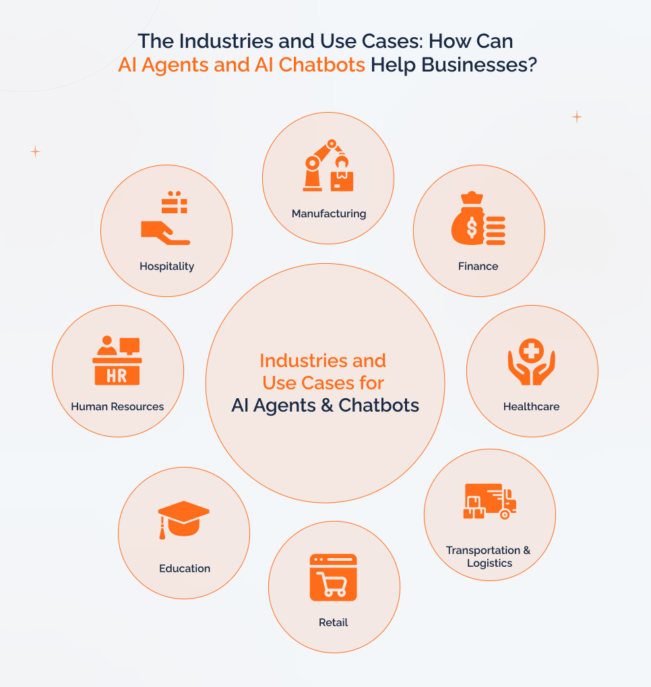
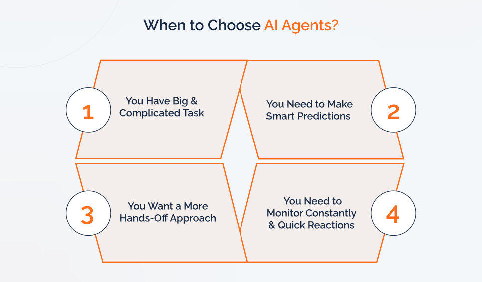
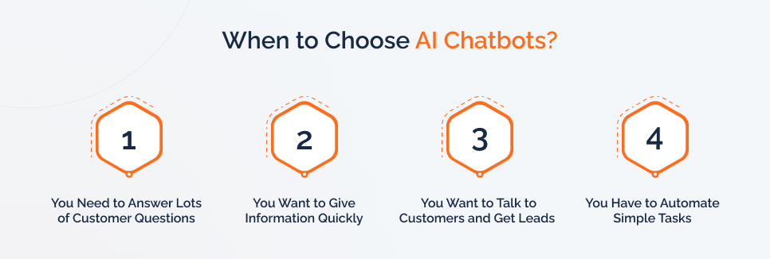

Artificial intelligence is changing the way businesses and customers interact, and AI agents and chatbots are at the forefront of this revolution. Both these programs help you get tasks done faster. However, AI agents can perform much more complex tasks than AI chatbots. At the same time, AI chatbots are better for human-like conversations for tasks like customer support.
In this blog, we look at what the major differences between these two technologies are, things you should know as a business, and learn what you can use them for.
What are AI Agents and AI Chatbots?
While both these programs are similar in many ways, there are also many important differences. More specifically, they are different in their capabilities, how they are trained, and how long it takes to implement them. Let’s look at both types of applications individually.
What is an AI Chatbot?
AI chatbots are applications that have a conversational interface to interact with users. Most AI chatbots have a chat window similar to messaging apps, and you can have conversations with the AI with back-and-forth messages.
The primary focus of AI chatbots is to provide information, answer questions from users, and perform simple tasks.

1. Conversational Interfaces: Chatbots are designed to mimic human conversations using natural language processing (NLP). Users can talk with them using text and voice, which can be used inside websites, messaging apps, and assistants.
2. AI Model: AI chatbots use machine learning and deep learning to understand what users are saying, and generate natural responses which are contextually relevant. Many AI chatbots use large language models (LLMs) like GPT-4 and Gemini to answer complex questions.
3. Task-Focused: Chatbots are built for specific tasks like booking appointments, placing orders, or providing information. Their purpose is to simplify human interactions and reduce workload for humans.
4. Limited Autonomy: Chatbots respond to human input and do not take actions on their own. They have predefined workflows that say how they can respond to user inputs.
5. Understanding Context: Modern chatbots can understand the context of what users are saying. They can remember the entire conversation and provide relevant responses.
What is an AI Agent?
AI agents are more advanced than chatbots and can be more autonomous and proactive. While chatbots respond to what users are asking, AI agents can work for themselves, understanding what’s in their environment and using this understanding to achieve goals.
Simply put, AI agents are like employees. They don’t just follow instructions, they can anticipate your needs and solve problems independently. AI agents can also improve their performance over time.

1. Independent Problem-Solving: AI agents have goals and they can work autonomously to achieve those goals. Once you put them to work, they can plan and execute tasks without any human input.
2. Understanding the World Around Them: AI agents can process information from various sources like text, images, and sensors. Similar to humans, they are aware of the environment around them and can act accordingly when it changes.
3. Reasoning and Planning: You can put AI agents into complex situations and they will be able to predict the outcomes and create detailed plans to achieve their goal. They simulate different scenarios and choose the best way to reach the goal.
4. Learning and Improving: AI agents can learn from their past experiences and can become more effective over time. If the conditions change, they can change strategies on their own.
- Both AI agents and chatbots use AI models to help humans.
- AI chatbots respond to human input, while AI agents can work independently.
- AI chatbots can remember entire conversations, while AI agents can learn from past experiences and improve performance.
How do AI Agents and AI Chatbots Differ in The Benefits They Provide
| Feature/Benefit | AI Agents | AI Chatbots |
|---|---|---|
| Autonomy |
|
|
| Impact on Processes |
|
|
| Analyzing Data |
|
|
| Resource Optimization |
|
|
| Risk Management |
|
|
| Scalability & Adaptability |
|
|
| Innovative Advantage |
|
|
| Long-Term Growth |
|
|
| Making Decisions |
|
|
The Industries and Use Cases: How Can AI Agents and AI Chatbots Help Businesses?
Both AI agents and AI chatbots have the potential to help businesses across industries. Let’s see how each technology helps businesses in different industries.

1. Manufacturing
- Predict machine breakdowns to prevent downtime.
- Optimize supply chains to make production efficient.
- Automatically check products for quality issues.
- Automate processes and adapt to changes.
- Provides instant responses to employees about procedures.
- Provides information on orders and delivery status.
- Gather employee feedback on safety protocols.
- Help workers with internal IT support.
2. Finance
- Make trades automatically based on market data.
- Detect and prevent fraudulent activities automatically.
- Manage investment portfolios and give personalized investment advice to customers.
- Provide more accurate financial predictions.
- Fetch bank account balances for customers.
- Guide customers through loan applications.
- Provide instant customer support for online banking on a 24/7 basis.
- Help customers understand complex financial products.
3. Healthcare
- Analyze medical data to find new treatments using medication.
- Create personalized treatment plans using the patient’s medical history.
- Monitor patients remotely and notify first responders in case of emergencies.
- Manage the resources of hospitals more efficiently.
- Schedule patient appointments and send reminders in a timely fashion.
- Answer common questions to patients about common medications and symptoms.
- Provide information about hospital services to patients.
- Provide round-the-clock mental health support to patients.
4. Transportation & Logistics
- Control self-driving vehicles and navigate safely.
- Optimize delivery routes based on traffic conditions to reduce costs and time taken.
- Manage and track inventory in warehouses automatically using IoT sensors.
- Control air traffic for flights and optimize routes for better efficiency.
- Provide tracking updates for shipments and deliveries in real time.
- Answer questions from customers about delivery times, delays, and disruptions.
- Guide users on how to book transportation and provide travel information.
- Help customers with problems like lost or damaged luggage or packages.
5. Retail
- Optimize inventory for retail stores based on demand and real-time sales data.
- Adjust pricing for products based on market trends and competitors.
- Show products to customers based on their activity in online stores.
- Provide suggestions and plans for changing store layouts based on customer traffic.
- Provide customer support for online orders, returns, and inquiries on a 24/7 basis.
- Inform about product recommendations to customers based on their past purchases.
- Guide customers through the process of purchasing products.
- Provide information about store open hours and locations.
6. Education
- Create personalized learning plans and assessments for students.
- Analyze student performance based on their information and provide targeted plans for improvement.
- Automate exams and grading processes to free up educators for teaching activities.
- Automate security monitoring on campuses using AI-enabled cameras.
- Answer student questions about courses, class timings, and assignments.
- Provide information about resources on campus, events, and deadlines.
- Help students schedule appointments with advisors and professors.
- Provide assistance for tutoring and generating content for study materials.
7. Human Resources (HR)
- Automate screening of candidate profiles and the requirement process by using AI to analyze resumes and applications.
- Monitor employee performance to identify areas of improvement for training and career development.
- Automate payroll processes based on the predefined policies of a company.
- Analyze the behavior of employees and help leaders understand the sentiments of employees.
- Answer employee questions about benefits, policies, and company procedures.
- Guide new employees through the onboarding process and provide resources for better understanding.
- Help employees find documents, forms, and contact information of decision-makers.
- Providing employees with anonymous options to report issues or grievances.
8. Hospitality
- Manage allocation of resources for hotels, managing staff and rooms.
- Predict equipment failures to minimize issues for guests.
- Automate security monitoring in hotels.
- Automate energy usage to reduce operational costs.
- Handle hotel and restaurant reservations, booking confirmations, and cancellations.
- Provide guests with instant information about hotel amenities, local places to visit, and safety tips during travel.
- Take room service orders and provide delivery updates.
- Automate security monitoring for hotels.
How to Choose Between AI Agents and Chatbots for Your Business?
Deciding on whether you need an AI agent or an AI chatbot depends on your specific needs, goals, and the nature of your business. Let’s take everything we have learned so far and see which one can suit your business.
When to Choose AI Agents? - Smart, Independent Workers

1. You Have Big and Complicated Tasks
If you have to automate tasks that need lots of planning and if you have to make decisions often, then an AI agent would be the best choice.
For example, factories that need to change their production quickly when new orders come in.
2. You Need to Make Smart Predictions
Let’s say that you have to go through a lot of data and use this data to make predictions about what will happen next. This could be the case if you’re trading on the stock market or are doing medical research. In these cases, an AI agent would be the best option.
For example, a hospital can use medical records to understand which patients are at high risk of coming back.
3. You Want a More Hands-Off Approach
This is not just for business decisions, self-driving cars, and robots in a warehouse, all of these tasks require a lot of automation. But if you need systems that will run on their own without human intervention, an AI agent would be suitable.
For example, a delivery company could use self-driving trucks to make deliveries more efficient.
4. You Need to Monitor Constantly and Quick Reactions
If your business requires you to monitor your equipment, your workers, and other components, then an AI agent would be the best choice.
For example, a bank can use AI agents to monitor financial transactions and detect fraud.
When to Choose AI Chatbots? - Fast, Helpful Assistants

1. You Need to Answer Lots of Customer Questions
If you have a lot of customers constantly asking similar questions like tracking orders or product information, AI chatbots can help.
For example, an online store can use chatbots to enhance their customer experience.
2. You Want to Give Information Quickly
If you want to give information to people quickly like school schedules or company policies, AI chatbots would be perfect.
For example, a school can implement helpful AI assistants for students and faculties.
3. You Want to Talk to Customers and Get Leads
If you want to start conversations with your website visitors, social media followers, or through other channels, AI chatbots can help.
For example, an agency can implement an AI chatbot that works like a sales development representative.
4. You Have to Automate Simple Tasks
If you need to automate easy but repetitive tasks like booking appointments or taking orders, chatbots are enough.
For example, a restaurant can implement a chatbot to take reservations from customers and even provide other information like the chef’s specials.
Build Your AI Agents and AI Chatbots With Our Team
At Sparkout Tech, we specialize in helping businesses just like you create your own AI agents and AI chatbots. Both AI agents and chatbots have different levels of complexity and difficulties to develop. However, both these applications use artificial intelligence, machine learning, and a lot of data.
We have a team of expert engineers and data scientists whose job is to take these complexities out of your plate and build solutions tailored to your business.
Start Your Journey Today
Turn Your Business Into An AI-Driven Powerhouse
In 2025, businesses are using artificial intelligence to provide better services for their clients without spending huge amounts of money. AI has made it possible for any business to provide world-class customer experiences. But you have to consider everything you have learned so far and pick the right AI solution for your business. AI will not replace all the employees in your organization. However, it will help your human agents work more efficiently and reduce their workloads. This, in turn, will add to your bottom line.
Frequently Asked Questions
ChatGPT is a type of AI chatbot but it is better classified as a virtual assistant. ChatGPT uses large language models or LLMs to answer a wider range of questions than a typical AI chatbot. But cannot perform tasks independently like an AI agent.
The cost for developing both these applications will depend on your needs. But typically AI agents can cost $10,000 or more, and AI chatbots can cost $5000 or more.
The short answer is no, because you still need humans for doing various tasks in a business. But if you have a very small agency or a micro-SaaS product, you can run your business with a very small team size.
Yes, many AI development companies provide AI agent and AI chatbot products that you can customize according to your business needs.
Yes, given that you have security measures in place. Both AI agents and chatbots are safe but to protect the data of customers, you should follow the best practices when developing them.
CO-Founder
Yokesh Sankar, Co-Founder and Chief Operating Officer of Sparkout Tech Solutions, leverages his expertise to drive innovation and operational excellence in the software industry. Passionate about empowering individuals with essential skills, he uses technology to streamline business processes and enhance efficiency. He advocates for AI and blockchain adoption, helping businesses integrate these technologies seamlessly into their operations. Staying ahead of AI trends, Yokesh explores industry applications and shares insights to foster growth and knowledge in the tech sector.